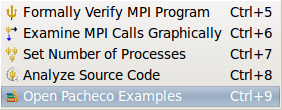
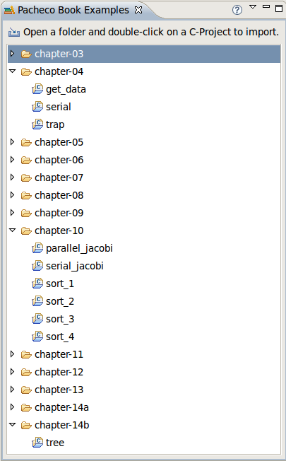

NOT CURRENTLY IMPLEMENTED

|
Using the Pacheco Examples
|
Working with the Pacheco Examples
Once you open the Pacheco Examples the Pacheco Examples View will automatically be brought to the
foreground. This can be done any of the following ways:
-
Select
 Open Pacheco Examples
from the trident dropdown icon on the Eclipse toolbar.
Open Pacheco Examples
from the trident dropdown icon on the Eclipse toolbar.
-
From the ISP menu, select
Open Pacheco Examples
-
Execute the key combo "CTRL+9".

Now you will be presented with a list of each chapter of the Pacheco book and the examples
it contains. Clicking on the arrow next to one of these chapters will make its contents visible
in the list. These new items each represent an MPI C-Project. Double clicking any
of these projects (or the context menu via a right click) will add it to your workspace.
At this point you can build the imported projects, run them as is, or use ISP on them like any
other project.

Pacheco Examples View Options
This view's toolbar has two buttons:
Import Selected Item - Imports the selected Pacheco book code into the current workspace as a C-Project.
 Get Pacheco Examples Help - Opens the Eclipse help topic related to the Pacheco Examples View.
Get Pacheco Examples Help - Opens the Eclipse help topic related to the Pacheco Examples View.
Note: This same functionality can be obtained through the context and pull-down menus for the view.
Back to Top | Back to Table of Contents
School of Computing * 50 S. Central Campus Dr. Rm. 3190 * Salt Lake City, UT
84112 * isp-dev@cs.utah.edu
License